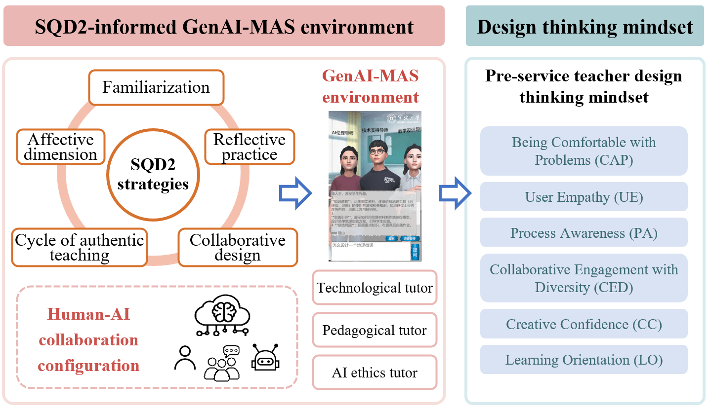
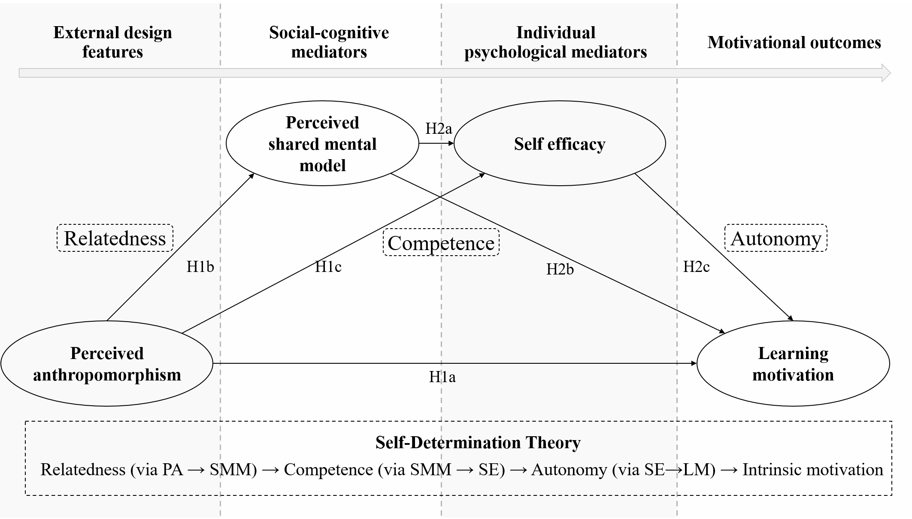
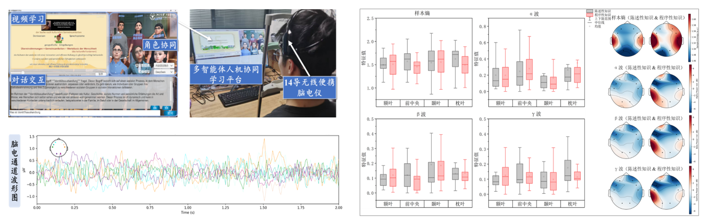
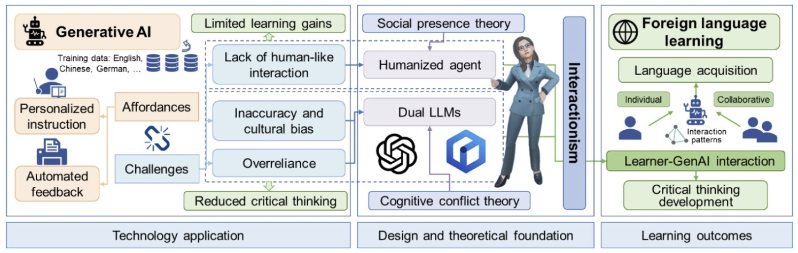
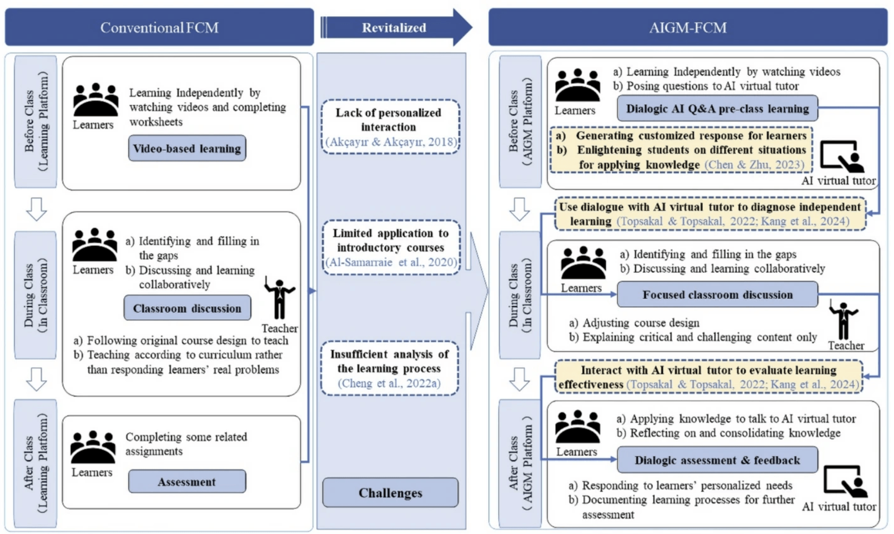
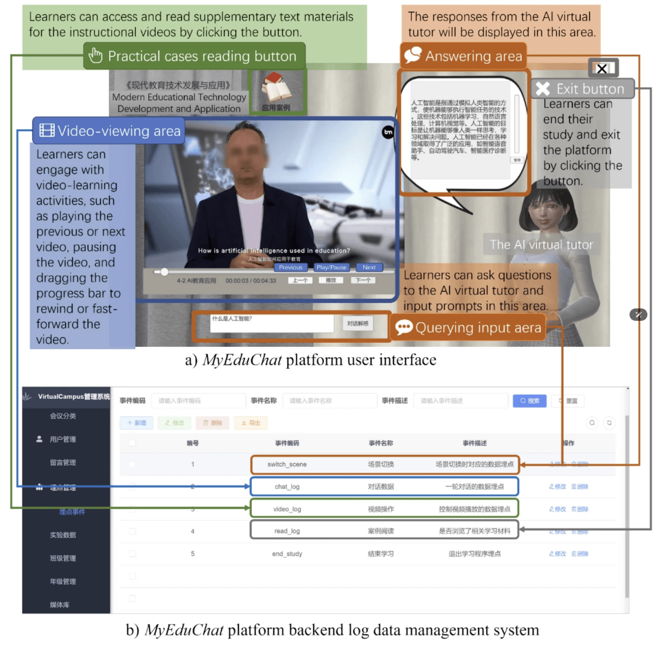
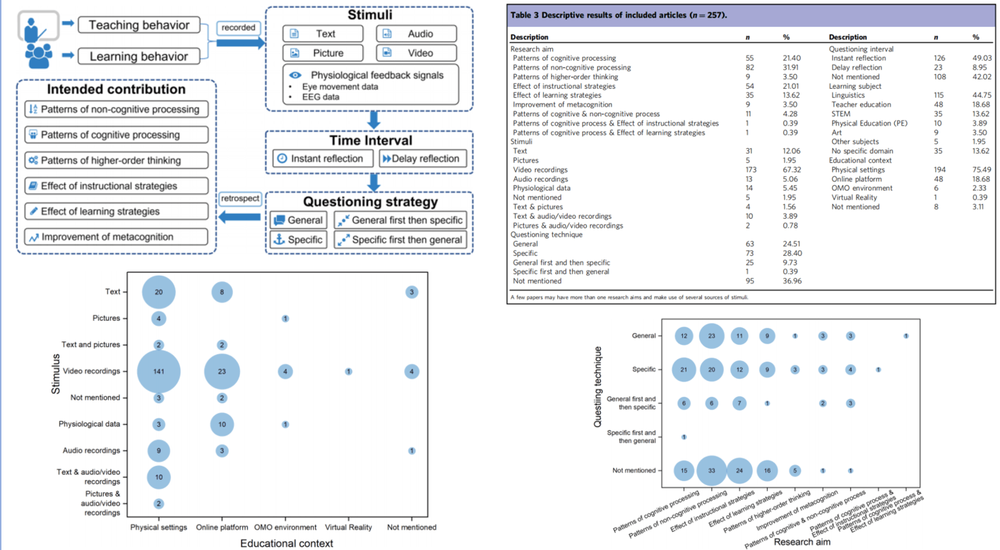
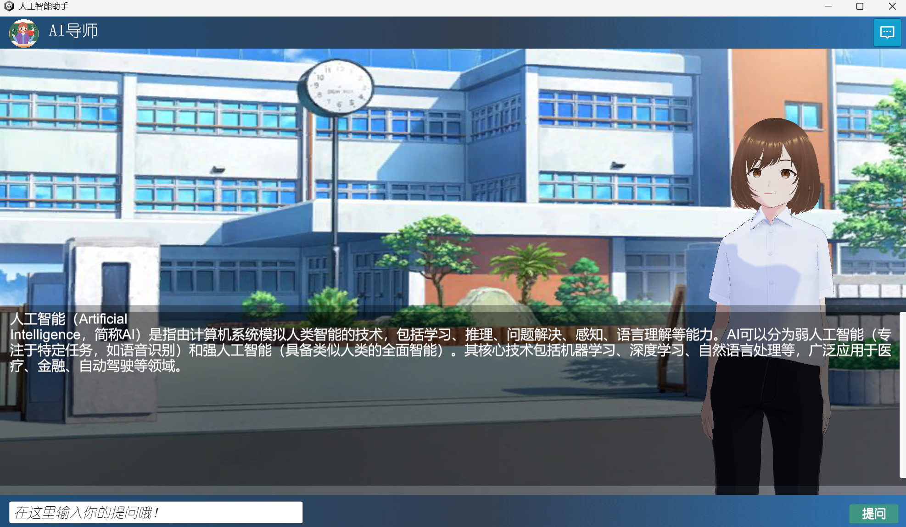

博士候选人 | 教育技术学 PhD Candidate | Educational Technology
探索生成式AI如何重塑教育的未来 Exploring how GenAI reshapes the future of education
我是浙江大学教育技术学博士候选人，关注人工智能赋能教与学、人机协同学习、沉浸式学习环境研究。在 Humanities & Social Sciences Communications、Educational Technology Research and Development、《华东师范大学学报（教育科学版）》、《电化教育研究》等刊物发表论文25篇，其中第一作者/通讯作者发表（录用）CSSCI/SSCI/EI论文8篇。成果获人大复印资料全文转载、ESI高被引收录，英文成果被引2730余次，H-index为10；中文成果下载量逾37000次，被引超490次，连续两年入选"中国知网高被引学者Top 5%"。
I am a PhD candidate in Educational Technology at Zhejiang University, with research interests in AI-empowered teaching and learning, Human-AI collaborative learning, and immersive learning environments. I have published 25 papers in venues including Humanities & Social Sciences Communications, Educational Technology Research and Development, and leading Chinese journals, with 8 SSCI/CSSCI/EI papers as first or corresponding author. My English publications have received 2,730+ citations (H-index: 10), including an ESI Highly Cited Paper. Chinese works have been downloaded 37,000+ times with 490+ citations, and I have been named a Top 5% Highly Cited Scholar by CNKI for two consecutive years.
聚焦职前教师培养，将SQD2框架与AI多智能体系统结合，探究设计思维的发展路径；构建师生机三元协同课堂，提升职前教师AI素养；研究拟人化智能体对职前教师学习效果与学习动机的影响机制。
Focusing on pre-service teacher development, this line integrates the SQD2 framework with multi-agent AI systems to examine design thinking trajectories; constructs a teacher-student-AI triadic collaborative classroom to enhance pre-service teachers' AI literacy; and investigates how anthropomorphic agents influence pre-service teachers' learning outcomes and motivation.


基于便携式EEG脑电技术，探究人机协同学习过程中学习者不同脑区的激活模式与认知投入（engagement），从神经生理层面验证学习是否真正发生，为人机交互设计提供客观依据。
Leveraging portable EEG technology to examine learners' regional brain activation and cognitive engagement during human-AI collaboration, providing neurophysiological evidence of whether deep learning actually occurs and informing the design of human-AI interaction.

系统探究GenAI如何促进学习者高阶思维发展。通过双LLM设置认知冲突、多智能体支持协同学习、拟人化智能体的社会存在与信任机制，以及科学教育场景下批判性思维与AI伦理素养的作用路径，构建GenAI赋能高阶思维的理论框架；同时基于PISA 2022大规模数据，以fsQCA方法揭示ICT促进创造性思维的组态配置路径。
Systematically investigating how GenAI fosters higher-order thinking. Studies span cognitive conflict via dual-LLM design, multi-agent collaborative learning, anthropomorphic agents' social presence and trust mechanisms, and pathways from critical thinking to AI ethics literacy in science education. Complemented by an fsQCA analysis of PISA 2022 data revealing configurational pathways through which ICT promotes creative thinking.

探索GenAI融入学习设计的新范式。将GenAI与沉浸式学习技术整合进翻转课堂，通过滞后序列分析与认知网络分析考察不同水平学习者的差异化效果；系统挖掘人机交互过程中学习者的行为序列与认知模式，为未来学习环境设计提供实证依据。
Exploring new paradigms for integrating GenAI into learning design. Studies embed GenAI and immersive learning technologies into flipped classrooms, using lag sequential and epistemic network analysis to examine differentiated effects across learner levels; and systematically mine behavioral sequences and cognitive patterns in human-AI interaction to inform future learning environment design.


从宏观与系统层面审视AI在教育领域的应用图景。基于Python文本分析，对世界一流高校生成式AI应用指南进行系统梳理；对2010–2020年AI教育应用研究进行系统综述，该成果已被认定为ESI高被引论文，引用超1200次。
Examining the broader landscape of AI in education at a macro and systemic level. Studies include a Python-based text analysis of generative AI use guidelines from world-leading universities, and a systematic review of AI applications in education from 2010–2020 — recognized as an ESI Highly Cited Paper with over 1,200 citations.

基于Unity 3D开发沉浸式学习环境，探索数字人交互设计对学习投入与效果的影响；研究沉浸式技术如何重构虚拟教学共同体，推动教育公平。具备完整的从环境开发到实证研究的全链路研究能力。
Developing immersive learning environments based on Unity 3D, and exploring how digital human interaction design influences learner engagement and outcomes; investigating how immersive technologies reshape virtual learning communities to promote educational equity. Full pipeline capability from environment development to empirical research.

推荐信及联系方式可根据申请需要提供。 References and contact information are available upon request.